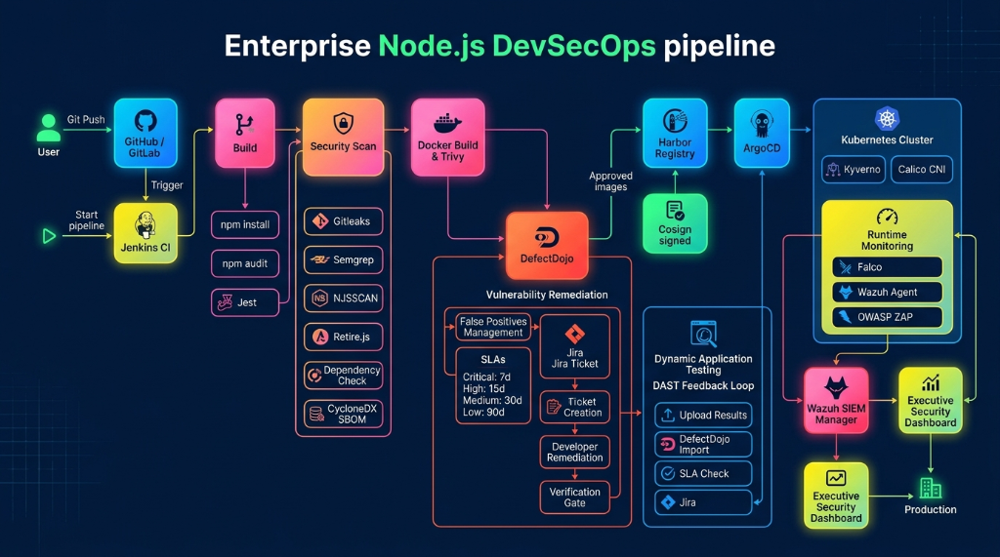

Hi, I'm T. Kutti Durai
I build |
Senior DevOps & Cloud Platform Engineer with 7+ years of expertise in designing, building, and deploying highly available, secure, and autoscaling infrastructures. I specialize in automating enterprise fintech/payment systems, container orchestration, GitOps, DevSecOps pipelines, and mobile app release automation (Android/iOS) for banking and financial sectors worldwide.
| NAME | READY | STATUS | RESTARTS | AGE |
|---|---|---|---|---|
| aws-node-7b89d | 1/1 | Running | 0 | 184d |
| coredns-58cc6fd | 2/2 | Running | 0 | 184d |
| karpenter-7dfbc9 | 1/1 | Running | 0 | 92d |
| istiod-ambient-6c | 1/1 | Running | 0 | 45d |
Multi-Cloud & On-Prem Architectures
Toggle through the architectures I have designed and deployed for enterprise payments and high-scale microservices, mapping tools from On-Premises to AWS and Azure.
DNS & Edge Security
API Routing & Service Mesh
Container Orchestration & Scale
Persistence & Messaging
Observability & CI/CD Operations
Architecture Inspector
Click on any architectural node in the diagram to inspect its technical details, implementation specifics, and benefits in my projects.
Amazon EKS
Orchestrates 30+ payment microservices on EKS, utilizing AWS Pod Identities, AWS VPC CNI, and fine-grained IAM roles for service accounts (IRSA).
- Maintained 99.99% availability for FAB payment endpoints.
- Integrated Kyverno policies to ensure container runtime compliance.
Case Studies & Architecture Gallery
Click on any case study card below to open its technical architecture diagram and explore a deep breakdown of the implementation, components, and results.

Enterprise Node.js DevSecOps Pipeline
Comprehensive automation scanning code (Semgrep/NJSSCAN), dependencies (Retire.js), Docker images (Trivy), signing builds (Cosign), and SIEM integration (Wazuh).

Multi-Account AWS Payment Platform
Highly available infrastructure orchestration using EKS, sidecarless Istio Ambient Mesh, Karpenter scaling, and RDS PostgreSQL replication.

Agentic PM & RAGNAROK AI Scaling
AKS cluster running generative AI prompt engines, connected through Private Endpoints to Azure OpenAI, Cognitive Search, and Service Bus.

Bare-Metal Payment Cluster
Local high availability cluster running CloudNativePG PostgreSQL, MetalLB load balancers, and HashiCorp Vault secrets operators.

PadosPay: Chatbot Payment Automation
Serverless ECS container clusters hosting WhatsApp Business Cloud APIs and webhook processing engines with event-driven Redis state caching.

Flutter iOS DevSecOps Pipeline (IPA)
End-to-end Jenkins pipeline integrating pre-build Gitleaks scans, Semgrep SAST, dependency scans, MobSF dynamic scans, and SeaweedFS.

Flutter Android DevSecOps Pipeline
Android packaging build pipeline integrating shift-left security checks, SonarQube code quality gates, and automated apksigner checks.

Flutter iOS App Store Release Flow
GitHub Actions workflows triggering Fastlane Match certificate signing, TestFlight distributions, and App Store Connect API submissions.

Flutter Android Beta Release Flow
GitHub Actions compiling and signing APK/AAB packages, and distributing builds automatically to Firebase App Distribution.

Enterprise Telemetry via LGTM & eBPF
Highly integrated metrics, logs, and distributed traces setup, utilizing zero-code metrics collection via Grafana Beyla and Alloy.

Log Analytics & APM via ELK Stack
Log collection (Beats) and ingestion pipelines (Logstash) powering core APM dashboards inside Elasticsearch and Kibana.
.png)
.NET Backend CI/CD Pipeline
Jenkins multi-branch builds running SonarQube checks, Trivy scans, and ArgoCD Kubernetes GitOps integrations.
Professional Experience
Chronological record of my career delivering reliable cloud infrastructure, automations, and software applications.
Led the full cloud migration for First Abu Dhabi Bank (FAB) to AWS using Terraform IaC, EKS, and 30+ payment microservices with zero downtime.
- AWS Infrastructure Automation: Provisioned scalable multi-account environments using Terraform/Terragrunt, cutting provisioning time by 80%.
- Zero Downtime Releases: Implemented Argo Rollouts with Blue-Green and Canary deployment strategies.
- Service Mesh & API Gateway: Managed Istio Service Mesh for mTLS, traffic splitting, and circuit breaking; utilized Kong API Gateway for JWT/OAuth2.
- Observability & Monitoring: Configured centralized telemetry via Grafana, Prometheus, ELK Stack, Loki, and OpenTelemetry for proactive alerting.
- Mobile DevOps: Created automated build and release pipelines for Android/iOS apps using Fastlane, Gradle, Xcode, and GitHub Actions.
Designed and managed highly resilient Payment applications deployed on Azure Kubernetes Service (AKS).
- Azure Provisioning: Automated VNets, VPN Gateways, Application Gateways, and PostgreSQL with high availability using Patroni.
- DevSecOps & Compliance: Configured Kyverno policies, Falco runtime threat detection, and Kubescape compliance scanning.
- Secrets & Certificates: Integrated Azure Key Vault with Workload Identities to enforce least-privilege credential access.
- Mobile Release Pipelines: Automated Flutter-based mobile app compilation and code-signing with Fastlane.
Managed core AWS platforms and microservice infrastructure, facilitating a monolith-to-microservices migration.
- AWS Administration: Configured EC2, RDS PostgreSQL, S3, IAM, CloudWatch, and Route 53 across development and production environments.
- GitHub Actions: Designed pipelines for containerized React.js and Node.js microservices.
- Migration: Containerized legacy applications using Docker and migrated them to Kubernetes with rolling update strategies.
Developed enterprise e-commerce and healthcare platforms, contributing as a full-stack engineer prior to transitioning into DevOps.
- Application Development: Programmed responsive frontends in ReactJS and secure backend REST APIs in Java Spring Boot.
- Authentication: Implemented JWT-based authentication and role-based access control (RBAC).
- Dockerization: Containerized development environments for consistent engineering onboarding.
Before stepping into IT, I spent years working as a Process Operator in chemical manufacturing (Saudi Arabian Fertilizer Company). This background taught me industrial reliability, strict safety protocols, and complex process automation—principles that perfectly map to DevOps. Just as chemical plants require strict pressure valves and monitoring, modern cloud platforms require autoscalers, alerts, and robust guardrails. I synthesized my passion for automation and completed my "career reaction", mastering coding and system engineering to emerge as a Senior Cloud Engineer.
Specialized DevOps Architectures
Showcasing deep capability in Mobile CI/CD pipelines (iOS/Android) and modern Kubernetes security topologies.
Mobile App Release Automation
Mobile DevOps is uniquely complex due to compilation, code-signing certificates, and app store validation gates. I have automated mobile releases for payment applications:
Multi-Platform Builds
Automated compilation of Native Android (Gradle), iOS (Xcode), and Flutter applications within GitHub Actions and Azure DevOps runners.
Code-Signing via Fastlane
Configured Fastlane Match to securely fetch iOS provisioning profiles and keystores from encrypted vaults, eliminating manual certificates.
Beta & Production Releases
Set up automated distribution to Firebase App Distribution/TestFlight (Beta) and direct deployment API pushes to Google Play and App Store.
DevSecOps Security Topology
Security is integrated directly into the pipelines rather than being treated as an afterthought, featuring quality gates and real-time vulnerability tracking.
Skills & Technologies
Explore my technical toolkit. Filter by category or search for specific tools in my stack.
VPC, EKS, RDS, S3, IAM, CloudFront, Secrets Manager, Route 53, KMS, Security Hub.
AKS, Virtual Network, Key Vault, Application Gateway, Azure DevOps, Blob Storage, Azure SQL.
EKS, AKS, ingress controllers, Helm, Karpenter node provisioning, HPA, KEDA autoscaling.
Istio Ambient Mesh, mTLS encryption, traffic routing/mirroring, circuit breakers, egress gateways.
Multi-stage builds, image optimization, security scanning, local environments containerization.
Modular architecture, multi-environment setups, Terragrunt DRY structures, remote states locking.
Automated VM configuration, patches deployment, and setup tasks orchestration via playbooks.
Application controller synchronization, declarative Git repo source of truth, Argo Rollouts canary/blue-green.
Shared libraries, multi-branch pipeline scripts, distributed builds agents scaling, security gates.
Custom composite workflows, reusable runners management, secret tokens integration, dependency caching.
Match profile mapping, iOS/Android metadata sync, automated builds distribution, Gradle integration.
Keychain unlocking, plist & manifest modifications, build flavoring, compiler optimization.
Vault Secrets Operator, transit engine encryption, dynamic database credentials, policy management.
Trivy (SCA/Containers), Semgrep (SAST), Gitleaks (Secrets), OWASP ZAP (DAST), DefectDojo hub.
Policy-based Kubernetes validation, runtime detection of anomalous kernel-level behaviors.
PromQL, Alertmanager, custom operational dashboards, Prometheus Operator configurations.
Grafana LGTM stack, logs shipping via Alloy, distributed tracing correlation using Tempo.
Zero-code autoinstrumentation with Grafana Beyla (eBPF), custom collector routing pipelines.
Patroni clustering, replica syncing, backup scripts, CloudNativePG operator in Kubernetes.
Strimzi operator configurations, partition planning, MirrorMaker DR replication, consumer lag tracking.
Session caching clusters, sentinel failover setups, cluster sharding for memory expansion.
Get In Touch
Let's discuss how my expertise can streamline your infrastructure, improve release velocity, and secure your cloud assets.
AWS Certified Solutions Architect
Issued by Amazon Web Services (AWS)